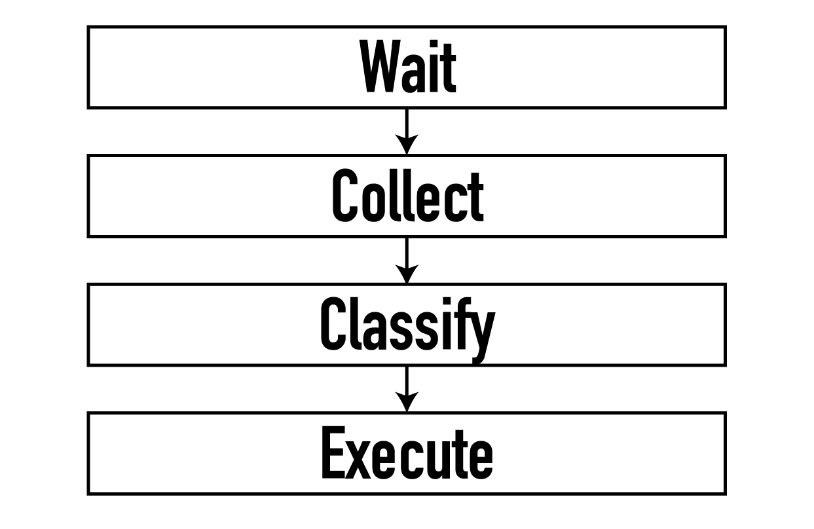

Gestural
Interactions
An exploration done as a part of my bachelor's projectInteractions
under the guidance of Prof. Ravi Poovaiah
and Prof. Venkatesh Rajamanickam.
What are Gestures?
Gestures are a form of nonverbal communication in which bodily actions are used to communicate messages either in place of or in conjunction with speech.
They are innate to us act and as a reinformcement to our speech.
There are a multitude of areas where gestures can be incorporated as a medium of interaction, as seen in the map above. These are the areas I identified as possible intervention points for the duration of this project.
But before I jump into the scenario space, I would like to give a bit of a background to what Gestural Interactions are.
What are Gestural Interactions?
Gesture + Input = Gestural Interaction
When gestures are used as an input modality, it is classified under the umbrella of Gestural Interactions. They can be classified into three categories.

The Gesture Model
This structure forms the base for all gestural interactions.

Project Timeline
Below is a timeline visualising the journey I took for the completion of this project. I began by gathering insights from existing work with regards to elicitation, classification of gestures and, given my desire to have a working prototype for this project, gesture sensing methods. This was followed by exploring sensors and developing scenarios, and figuring how these two facets go hand in hand. Based on my explorations, I arrived at my final concept which I have described in greater detail below.